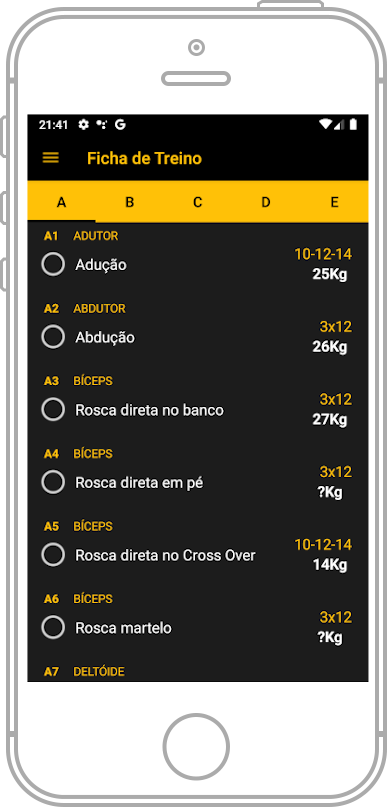

SkyLine Trainer
ㅤNunca foi tão fácil elaborar fichas de treino para você ou para seus alunos. Crie prescrições em instantes e otimize o seu dia a dia! O SkyLine Trainer é mais do que apenas um aplicativo de treino, é um verdadeiro personal trainer digital que acompanha o usuário em cada etapa da sua jornada fitness.
Serviços
Cadastre treinos predefinidos por objetivo, nível de execução e técnica aplicada.
Personalize a lista de exercícios com seus próprios vídeos, fotos ou utilize as animações padrões do sistema.
.png)
Ficha de treino
.png)
Avaliação física
Histórico de Treinos
O usuário pode ter seu histórico de treinose pesagens, de forma a acompanhar sua evolução.
Custos
"Quanto custa usar o Skyline Trainer?"
ㅤO acesso a ferramenta é totalmente gratuito, após se cadastrar poderá usar totalmente o Skyline Trainer. Poderá criar treinos, criar exercícios, criar pacotes de vendas e começar a divulgar seu perfil.

Sobre
ㅤA FitTech, uma empresa inovadora no setor de tecnologia fitness, orgulhosamente apresenta o SkyLine Trainer, um aplicativo revolucionário desenvolvido para transformar a experiência de treinos na academia.
ㅤO SkyLine Trainer foi projetado para atender a todos os níveis de condicionamento físico, desde iniciantes até atletas avançados, oferecendo planos de treino personalizados e adaptáveis às necessidades individuais de cada usuário.
Personalização de Treinos:
ㅤO SkyLine Trainer utiliza um avançado algoritmo de inteligência artificial para criar planos de treino personalizados. Ao inserir informações como objetivos fitness, nível de experiência, limitações físicas e preferências pessoais, o aplicativo gera um plano de treino único que se adapta às necessidades e progresso do usuário.
Interface Amigável:

ㅤO SkyLine Trainer foi desenvolvido com uma interface intuitiva e de fácil navegação.
ㅤCom um design moderno e funcional, todas as funcionalidades estão a poucos toques de distância, proporcionando uma experiência de uso fluida e agradável.
Contato
Telefone
+55 (99) 9999-9999
skyLine_trainer@gmail.com

@skyline_trainer